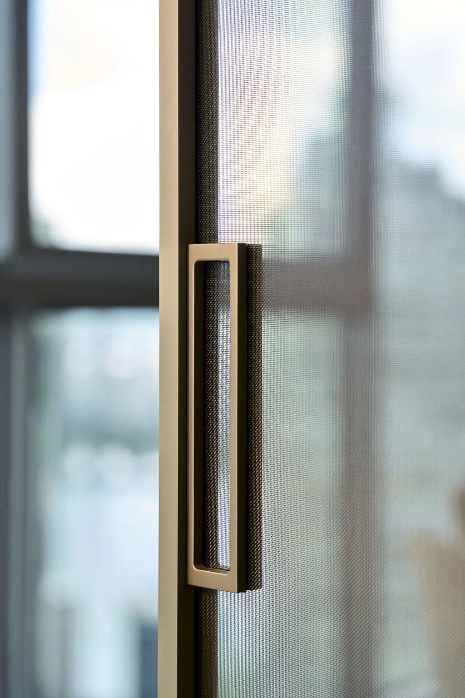
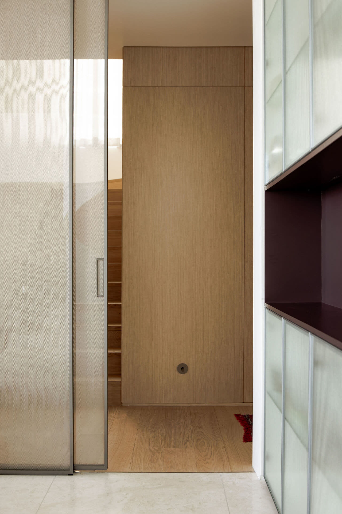
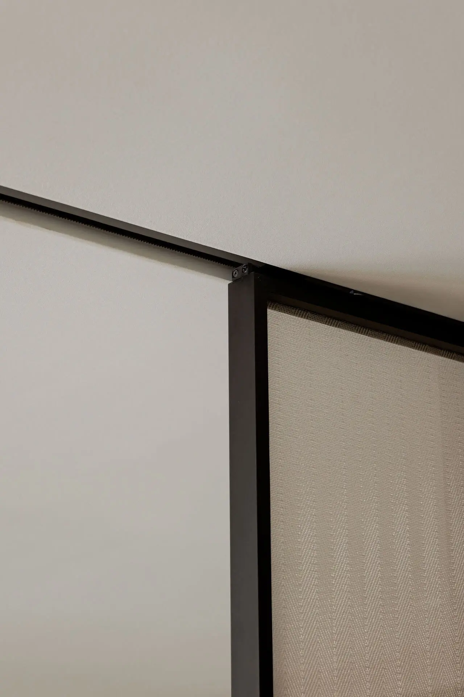
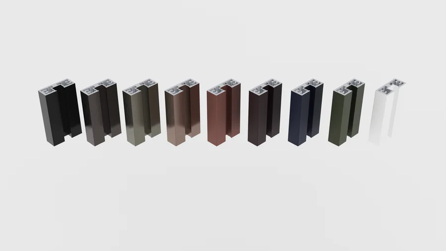
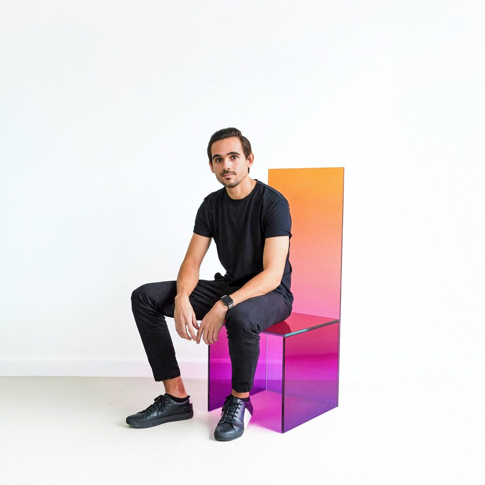

Un sistema. Quince maneras de abrir un espacio.
Pernia Glass no es un catálogo de puertas distintas. Es una sola familia paramétrica: un mismo perfil, un mismo vidrio, un mismo mecanismo — reconfigurados en quince sistemas según cuántos paneles se mueven y hacia dónde desaparecen.
La lógica detrás de toda la línea. Por qué un solo sistema basta.
Estandarizar el componente. Variar la composición. Todo nace del mismo perfil slim.
Ver los sistemas →El perfil slim anodizado
Un perfil de aluminio de marco mínimo: la estructura desaparece y el vidrio toma el protagonismo. Anodizado en 9 acabados — de negro mate a oro y cobalto — para integrarse o contrastar con la arquitectura. El mismo perfil se usa en las quince configuraciones; cambia la cantidad de carriles, no la pieza.


El vidrio laminado de 8mm
Dos láminas de vidrio unidas por un interlayer: seguridad, aislamiento acústico y un espesor constante de 8mm en toda la línea. El vidrio lo provee Glass Lab — tres familias clasificadas y documentadas, desde colores translúcidos hasta inserciones tejidas y reflectivos. El sistema es el bastidor; el vidrio es la decisión expresiva.
El mecanismo soft-close
Cada hoja corre sobre un rodamiento oculto en el header, con freno amortiguado que detiene el panel suavemente al final del recorrido — sin golpe, sin rebote. El header se dimensiona en hierro 2×2, 2×4 o 2×6 según la carga, se oculta tras un cielo raso de gypsum y, opcionalmente, se remata con un trim de madera 2×1.

Cuatro bases. Una sola variable: cuántos paneles se mueven.
Una hoja deslizante. La división esencial — el miembro más compacto, para vanos pequeños y cuartos auxiliares.
Un fijo y un corredizo. El clásico de la línea — la configuración más versátil para habitaciones, baños y oficinas.
Un fijo, dos corredizos apilables. Apertura amplia sin perder el cerramiento total — para divisiones de gran luz.
Cuatro paneles, simétrico o asimétrico. La opción más arquitectónica para grandes vanos y aperturas tipo francesa.
Sobre estas bases, cada sistema varía según cuántas hojas se mueven y hacia dónde: hojas fijas combinadas con corredizas, ambas hacia el mismo lado dentro de un pocket de muro, o abriéndose a lados opuestos. A las corredizas se suman las versiones pivotante, abatible y de gabinete — quince sistemas en total, todos del mismo perfil slim.
Explorar las quince configuraciones →Cualquier vidrio laminado del catálogo Glass Lab
El sistema es neutral respecto al vidrio: acepta cualquier laminado de 8mm. Ahí entra Glass Lab, el laboratorio de materiales detrás de Pernia, con tres familias clasificadas y documentadas.
Especificaciones universales
9 acabados anodizados

Relevamiento en sitio del vano, verificación de niveles y definición de configuración, vidrio y acabado de perfil.
Corte y anodizado del perfil, laminado del vidrio en Glass Lab y ensamble del mecanismo soft-close.
Montaje del header de hierro, nivelación de carriles, colocación de paneles y calibración del freno amortiguado.
Control de calidad, cielo raso de gypsum, trim opcional de madera y ajuste final del recorrido en sitio.

Guillermo Pernia
Fundador & Director · Pernia Glass + Glass Lab“No quería fabricar puertas. Quería un sistema: una sola pieza bien resuelta que se pudiera componer de infinitas maneras.”
Arquitecto de formación, Guillermo creó Pernia Glass para resolver una frustración concreta: las puertas de vidrio del mercado eran pesadas, toscas y limitadas. Su respuesta fue un sistema paramétrico — un solo perfil slim anodizado, quince configuraciones, un mecanismo soft-close — fabricado en Panamá con estándar internacional.
Detrás de cada puerta está Glass Lab, su laboratorio de materiales: un archivo de vidrios clasificados, probados y documentados que alimenta toda la línea. No le interesa el vidrio como material corriente, sino como material expresivo — con textura, color y presencia propia.
Encuentra tu configuración
Quince sistemas, nueve acabados de perfil y todo el catálogo Glass Lab. Definamos juntos la puerta exacta para tu proyecto.